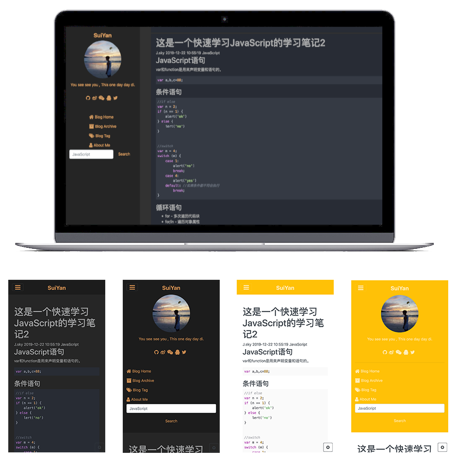

碎言博客终端操作详解
作者:J.sky 发布时间:2019-12-30 15:56:49 Tag:
碎言博客
关于z.py
z.py是碎言博客构建索引的关键程序，采用Python3相关技术开发。
终端运行： python3 z.py

即可看到相关的命令帮助。
-i
python3 z.py -i
每次创建完新文章后都会自动创建索引，若是修改了文章的标题，作者，标签，时间等头部信息后，应该运行此命令进行索引更新。
-n
python3 z.py -n 这里写你的新文章的标题名称
-n用来创建新文章，其中还有几个选项可以使用，其中-n后边必须跟随一个新标题。-
-d用来创建一个存放的目录python3 z.py -n blog_title -d blog
会在默认.md存放目录articles下创建一个blog目录，新文章就创建在这里。
-
-t -a -p分别对应标签，作者和文章地址页面名称。作者留空默认填充为博客站长昵称。 -
-v显示当前程序的版本。 -
-tt参数为int，此命令用来生成测试blog,填写需要生成的数目，测试文章放在目录suiyantest下。
碎言静态博客概述及快速开始
作者:J.sky 发布时间:2019-12-29 19:10:30 Tag:
碎言博客
概述
碎言这个名称取自与"碎言片语"，码兄累了吗？累了就休息一下，为未来的自己留下一些碎言片语吧。 演示： 碎言博客

软件架构
前端使用了jQuery，bootstrap4,font-awesome-4.07,marked.js,highlight.js,jqPaginator,less,jQuery.toTop等技术框架。
本地构建博客索引使用了Python的相关技术。
博客文章写作采用Markdown技术支持，让你专注写作更流畅。
快速开始
安装
首先克隆下载碎言静态博客， * Gitee * GitHub
安装完成。
创建文章
python z.py -n 此处写文章标题
这个时候就会在articles目录下创建一篇文章。更多终端操作
创建索引
博客的文章排序及搜索以来此索引blog_data.json，每次创建文章的时候回自动更新索引，但是如果你修改了头部的一些索引信息，则需要运行命令来更新索引。
python z.py -i
修改博客及站长资料
config.json里存放着一些站点的资料，上传前建议先修改成自己的资料。
运行站点
推荐使用Live Server这个vscode得插件，非常方便。
修改站点样式
碎言博客内置了八套网站样式，四套light四套dark，修改四个html页面的外链CSS连接即可。
具体修改方法请点击查看： 细说修改碎言博客站点的样式
部署
git push origin master
提交所有文件到git仓库即可。
欢迎交流
如果有什么问题，欢迎进群讨论学习Q群:217840699
基于Django构建的小学生英文单词背写检测考试系统。
作者:J.sky 发布时间:2019-11-07 16:10:19 Tag:
站长源创
PyWordTest

介绍
孩子的学习总是让父母担忧，英语学习也是让家长的头疼之事，做为程序员老爸不能整天忙于编程而忽视了孩子的教育，我们也要搞点事情。孩子英文单词到底背的怎么样了？别怕，用PyWordTest,创建题库，轻松搞定孩子的英语单词拼写情况。
> 本软件非英语单词学习软件，只是通过在线答题来检测孩子对单词拼写的掌握。
软件通过在线考试，记录考试结果及每个单词的拼写对错情况，最后通过一些算法分析孩子对单词拼写熟练度。
通过易错单词了解孩子哪些单词没有掌握，通过自建题库加强孩子对生疏单词的反复练习，更多功能还在研发中。
程序截图：


软件架构
基于Django构建的小学生英文单词背写检测考试系统。
环境需求： python (3.6.1) Django (2.2.7) Pillow
安装教程
进入程序目录后，运行python3 manage.py runserver
后台管理地址http://127.0.0.1:8000/admin/
管理员登陆:
用户名：admin 密码：17python.com
前台地址http://127.0.0.1:8000/
使用说明
程序已经采集了近1000小学生常用单词，后台可以根据自己的需要进行添加题库进行测试。
建议新建一个帐号用来考试建题库使用。
参与贡献
非常欢迎有想法的程序员参与提交代码，程序还很不完善！希望大家多多参与！
源码下载：
PYBabyLog记录孩子成长过程的日记
作者:J.sky 发布时间:2019-09-29 00:15:30 Tag:
站长源创
前言
岁月如风，唯有此忆。 任凭时光匆匆，记录点点滴滴。
当爸爸了，就多陪陪孩子，有事没事的记些与孩子在一起的时光，不要总把心思放在程序编码上，也多陪陪孩子！
做了那么多的程序，是时候为孩子做个数据库，也许将来某一天你也会翻翻看看。
PYBabyLog的前身是 BabyLog(Java开发版)
是用来记录孩子成长过程的日记，她包括：日记，语言，认知等，还包括身高，体重，并使用图表展示。
PYBabyLog
PYBabyLog使用Python开发的终端版本，其增删改查的操作都是在终端进行的，大大的节省了程序员老爹的宝贵时间。
采用Python+MySQL+argparse技术开发的全终端操作软件。
可以说编程新手下载随便看看都能看懂，软件功能非常简单，但意义非凡。
本程序数据库和BabyLog(Java开发版)通用，可以用来展示数据。 当然牛逼的你可以自己制作更威猛的展示，最好能提交一份代码给我好吗？
界面截图


安装方法
1.下载程序所有文件，并建立mysql数据库，导入下边的sql文件构建数据库数据库构建文件
2.修改DbHelp.py中的MySQL的连接配置项即可
终端版操作命令简介
整理中。。。。。
x.py -h 就都出来了。
写在结尾
其实有很多话想说，估计很多程序员都有了自己的孩子，记录一些和孩子在一起的时光吧，那将是你自己最好的回忆。
若给各位大虾能提交些代码或是有好的建议，非常欢迎！